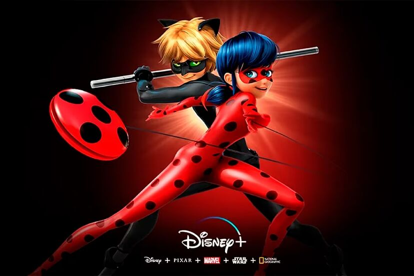

Marinette Dupain-Cheng / Ladybug: Es una adolescente estudiante en el Colegio Françoise-Dupont de París. Es una chica de personalidad optimista, alegre, altruista, amable, soñadora, y también algo torpe, melodramática e insegura, que sueña con convertirse en una famosa diseñadora.
